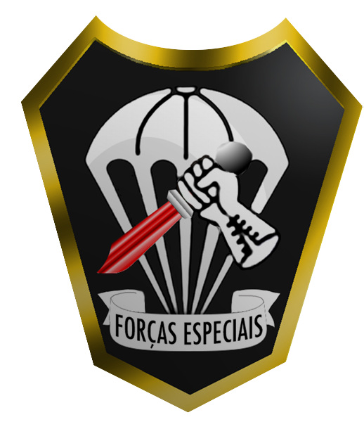

O SÍMBOLO DAS FORÇAS ESPECIAIS
É uma combinação de ramos curvos e retos que se aproxima da forma triangular. Tem o fundo preto simbolizando a predominância da atuação noturna nas operações. O pára-quedas aberto, estilizado, com cinco linhas simbolizando as quatro armas e um serviço, existente na época (infantaria, cavalaria, artilharia, engenharia e intendência). A mão enluvada significa a impessoalidade ou anonimato da ação violenta, expressa pela faca com a lâmina em sangue. Faixa com dizeres “forças especiais”, acolhendo os elementos do distintivo. Debrum de contorno todo em dourado.
HISTÓRIA
Onde e quando se deu o primeiro Curso de Operações Especiais? Na Vila Militar, dentro do então Núcleo de Divisão Aeroterrestre. Claro que houve diversas instruções em outros locais, mas a sede daquele primeiro curso foi junto da atual Brigada Paraquedista. O inicio do período de formação foi em 02 de dezembro de 1957. O término em 13 de março de 1958. Houve um período de aplicação, de 02 de junho de 1958 a 04 de julho de 1958.
Após estudar o que havia sido mostrado nos Estados Unidos a respeito do curso “Ranger” e, principalmente, do Batalhão de “Special Forces”, a nova comissão organizou o currículo do Curso de Operações Especiais. Este, depois de devidamente estudado e alterado pelo Estado Maior do Núcleo, foi posto em execução a 02 de dezembro de 1957. Como se tratava de um curso ainda em caráter experimental, tivemos de fazer inúmeras alterações no que estava previsto. O civil Hélio Gracie, apresentado por um capitão, orientou as instruções de lutas, ataque e defesa. Os dois já treinavam juntos e o Capitão passou a ministrar as instruções utilizando aquela técnica de combate.
Todos eles foram submetidos a exame de saúde e teste físico, sendo avaliadas as condições de força, vigor, agilidade, resistência e coordenação motora. Muita gente se apresentou para os testes, mas nem todos atingiram os índices. Como era algo inteiramente novo o espírito que dominava os candidatos era o de um entusiasmo “aventureiro”, todos sedentos pela novidade e querendo ampliar sua capacitação profissional. Eram novos horizontes... Propusemos a criação do Destacamento de Operações Especiais. Na pratica, o que ocorreu foi que o pessoal foi distribuído pelas Unidades, ficando em condições de ser mobilizado a qualquer momento.
FORÇAS ESPECIAIS
Tropa de operações especiais apta na condução de guerra irregular, que, pela versatilidade que lhe confere a estrutura, o grau de instrução e o grande número de especialistas, pode ser empregada em grande variedade de missões que contribuem para a consecução dos objetivos da força como um todo.
MISSÃO
Os Operadores de Forças Especiais são especialistas em Guerra Não Convencional, Reconhecimento Especial, Operações Contra Forças Irregulares e Contraterrorismo. Organizam-se em Destacamentos Operacionais de Forças Especiais (DOFEsp), podendo ser empregados em ambientes hostis, negados ou politicamente sensíveis.
O DOFEsp é capaz de estabelecer e cultivar laços de confiança com a população local a despeito das barreiras culturais, apoiando ou evitando uma confrontação militar formal, com repercussões nos níveis político e estratégico do conflito. Os Forças Especiais são caracterizados por serem um grupo de elite de altíssimo desempenho que cumpre missões e tarefas em áreas profundas, além das capacidades das forças convencionais.
Estas frações são exclusivamente especializadas, organizadas, equipadas e empregadas de acordo com as seguintes condicionantes:
CURSO DE FORÇAS ESPECIAIS
O Curso de Forças Especiais - CFEsp tem por finalidade habilitar o oficial do Exército Brasileiro a planejar, conduzir e/ou realizar operações especiais ou operações com emprego de Forças de Operações Especiais, integrando um Destacamento Operacional de Forças Especiais (DOFEsp), nas funções de Cmt, SCmt, Of Intg e Of Op; habilitar o sargento do Exército Brasileiro a operarem Operações especiais ou operações com emprego de Forças de Operações Especiais, integrando um DOFEsp, nas funções de Armamento, Comunicações, Demolições ou Saúde.Possui a duração máxima de 23 (vinte e três) semanas, com o emprego de técnicas, táticas e procedimentos específicos das operações especiais, conduzindo operações de busca, combate e salvamento, prevenção e combate ao terrorismo, reconhecimento especial, guerra irregular e operações contra forças irregulares, visando a consecução de objetivos políticos, econômicos, psicossociais ou militares relevantes, preponderantemente, por meio de alternativas militares não convencionais. Podem ser conduzidas tanto em tempo de paz quanto em períodos de crise ou conflito armado; em situações de normalidade ou não normalidade institucional; de forma ostensiva, sigilosa ou coberta; em áreas negadas, hostis ou politicamente sensíveis; independentemente ou em coordenação com operações realizadas por forças convencionais; em proveito de comandos de nível estratégico, operacional ou tático.
CANÇÃO DOS FORÇAS ESPECIAIS
REQUISITOS
Ser possuidor do Curso de Ações de Comandos e Básico Pára-Quedista.
OBS: Militares de outras forças armadas nacionais ou estrangeiras não poderão realizar o CFEsp.
"O ideal como motivação;
A abnegação como rotina;
O perigo como irmão e
A morte como companheira."